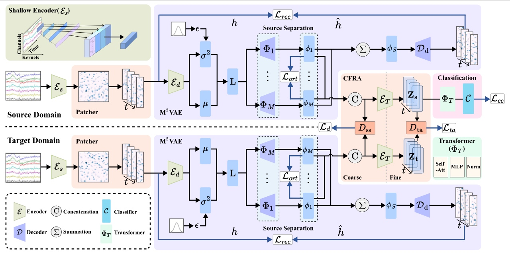

课题组介绍
围绕多模态理解与情感计算，研究人类情感的识别、推理及相关智能交互方法。
课题组视频
研究成果

Instance-Consistent Fair Face Recognition
PDF
Learning Representations for Facial Actions from Unlabeled Videos
PDF
DreamActor-M2: Universal Character Image Animation via Spatiotemporal In-Context Learning
PDF
Sera: Separated Coarse-to-fine Representation Alignment for Cross-subject EEG-based Emotion Recognition
PDFNEWS
研究组动态
学术报告、会议活动与研究交流。
2026 年中国多媒体大会（ChinaMM）论坛报告
第 75 期 CSIG 云上微表情学术报告
邀请牛雪松博士开展学术交流
邀请 Jiahao Xie 博士开展学术交流
邀请 Xin Cai 博士开展学术交流
算法与模型展示 栏目筹备中